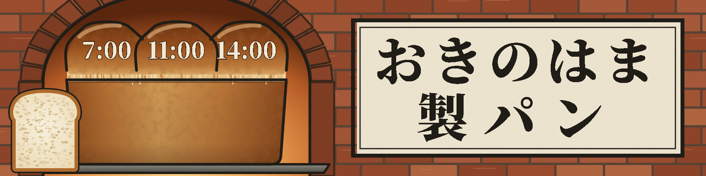
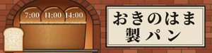
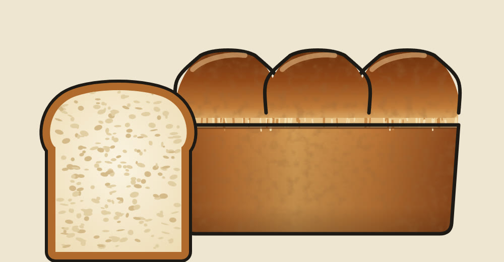

おきのはま：横長看板（窯の口から焼きたて）
背景いっぱいに窯の煉瓦を積み、アーチの口から天板に乗った食パンが出てくる場面にしました。三つの山には焼き上がりの時刻、右の額には店名を2行で大きく入れています。画像を押すと実寸で開きます。

遠くから見たときの大きさ（幅300ピクセル）

前回の食パンの絵（右端を直した版）

背景いっぱいに窯の煉瓦を積み、アーチの口から天板に乗った食パンが出てくる場面にしました。三つの山には焼き上がりの時刻、右の額には店名を2行で大きく入れています。画像を押すと実寸で開きます。


